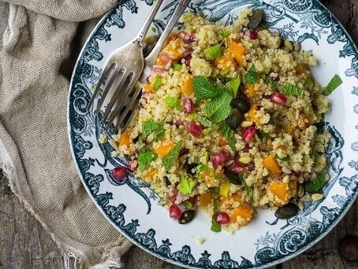

Ingredientes:
- 300 g de calabaza
- 1 cebolla morada
- 75 ml de aceite de oliva
- 200 g de quinoa
- 30 g de mezcla de semillas
- Cilantro Fresco
- Menta Fresca
- Tofu Firme
- Jugo de Limon

Comenzaremos precalentando el horno a 220 grados. Cortamos la calabaza pelada en dados y la cebolla morada en láminas y las asamos con un poco de sal y una cucharada de aceite de oliva durante 20 minutos. Por otra parte lavamos la quinoa y la cocemos en agua hirviendo con sal, durante 10 a 15 minutos. La escurrimos y la dejamos drenar totalmente. Combinamos el resto de ingredientes en un bowl.